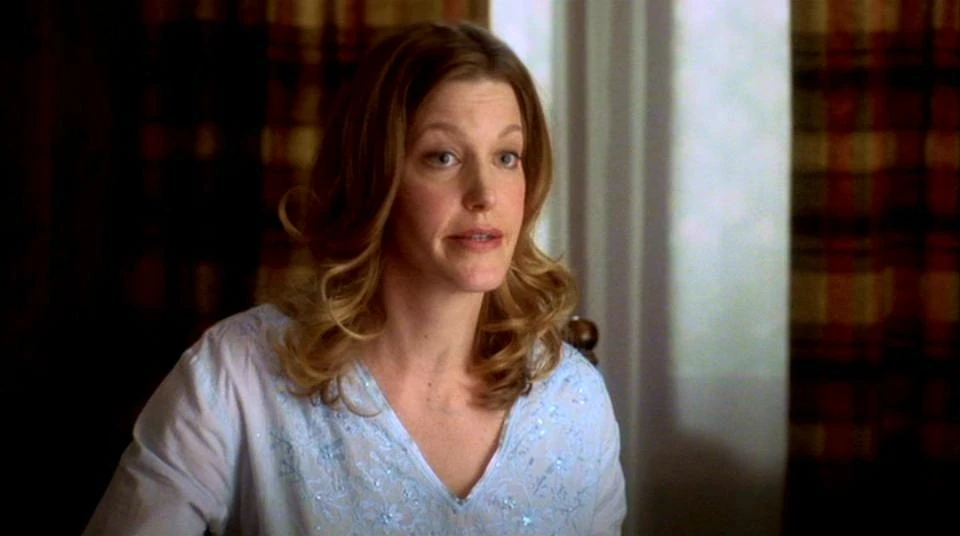
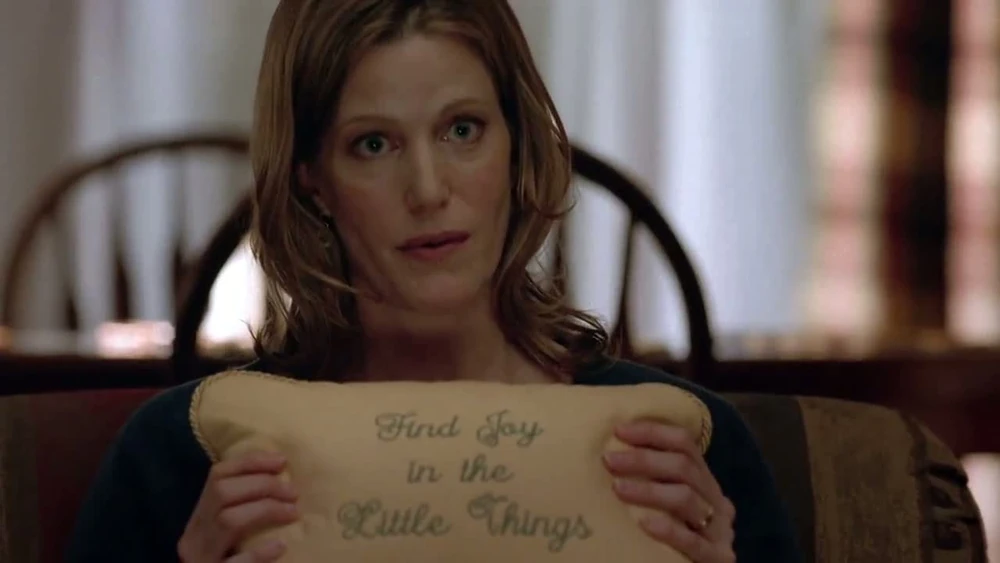
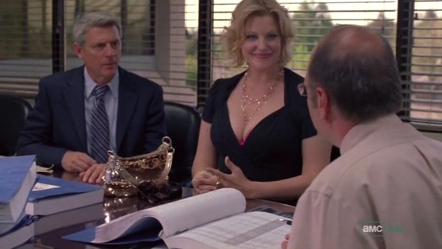
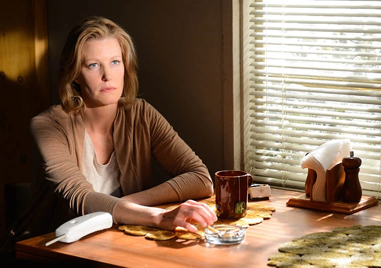
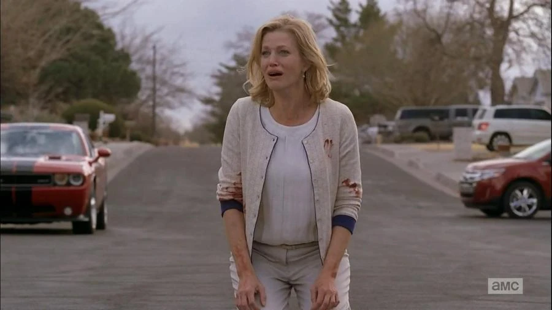

Skyler White

Skyler White es uno de los personajes centrales de *Breaking Bad*, interpretada por Anna Gunn. A lo largo de la serie, Skyler experimenta una evolución compleja al descubrir y enfrentarse a la doble vida de su esposo, Walter White, quien se convierte en el narcotraficante conocido como “Heisenberg”. Su historia aborda temas de lealtad, conflicto moral y la lucha por proteger a su familia mientras lidia con las consecuencias de las decisiones de Walter.
Comienzos: La Esposa y Madre DedicadaAl inicio de la serie, Skyler es una esposa leal y madre protectora de su hijo adolescente, Walter Jr., quien tiene parálisis cerebral. Está embarazada de su segundo hijo, Holly, y lleva una vida tranquila en Albuquerque, Nuevo México. Skyler es organizada, meticulosa y se encarga de la economía del hogar. Trabaja en tiempo parcial como contadora y escritora de cuentos, y se preocupa por la situación financiera de su familia, especialmente ante el bajo salario de Walter como profesor de secundaria y sus problemas de autoestima. Skyler es consciente de los problemas económicos que enfrentan, pero ignora hasta qué punto su esposo está dispuesto a llegar para resolverlos. Su relación con Walter es cercana y amorosa al principio, aunque la tensión entre ambos aumenta cuando él comienza a comportarse de manera extraña.
 La Revelación del Negocio de WalterLa relación de Skyler y Walter cambia radicalmente cuando a Walter le diagnostican cáncer de pulmón avanzado. Skyler se convierte en su principal apoyo durante el tratamiento, pero pronto empieza a notar comportamientos extraños en él: largas ausencias, una gran cantidad de dinero sin explicación y una actitud cada vez más reservada y agresiva. Al principio, Skyler sospecha que Walter podría estar teniendo una aventura o haciendo algo ilegal. Finalmente, Walter revela que está involucrado en el negocio de las metanfetaminas, lo que deja a Skyler devastada y horrorizada. En un principio, intenta distanciarse y proteger a sus hijos de las actividades de Walter, pero con el tiempo se encuentra atrapada en la red de mentiras que él ha tejido y se ve obligada a tomar decisiones difíciles para mantener a su familia segura.
 Lucha por el Control y Colaboración ForzadaDespués de la revelación, Skyler intenta distanciarse de Walter y buscar una salida de la situación. En un intento de recuperar control sobre su vida, inicia una breve aventura con su jefe, Ted Beneke, como una manera de desafiar a Walter y mostrarle que no está dispuesta a ser parte de su mundo criminal. Este acto de rebelión genera aún más tensiones y conflictos entre ellos. Sin embargo, Skyler pronto se da cuenta de que está atrapada en el mundo de Walter, ya que cualquier intento de divorcio o separación podría exponer las actividades de su esposo y poner en peligro a toda la familia. A pesar de su desaprobación, comienza a involucrarse en el encubrimiento del negocio de drogas de Walter, utilizando sus habilidades contables para lavar dinero y esconder sus actividades ilegales. Skyler ayuda a Walter a justificar sus ganancias y utiliza el lavado de dinero a través de un lavadero de coches que adquieren como negocio familiar.
 Crisis de Conciencia y Deterioro EmocionalA medida que el negocio de drogas de Walter se vuelve más peligroso y su personalidad se transforma, Skyler empieza a sufrir una crisis de conciencia y un deterioro emocional. Aunque trata de mantener la apariencia de una vida normal, su salud mental se ve gravemente afectada al ver en lo que se ha convertido su esposo y al saberse parte de sus actividades ilegales. Skyler se siente constantemente amenazada por Walter, quien en su transformación hacia Heisenberg adopta una actitud intimidante y manipuladora con ella. En un momento crítico, Skyler llega a decirle que está “esperando” que su cáncer regrese, mostrando la desesperación y el dolor que siente por la persona en la que Walter se ha convertido. Vive bajo un miedo constante por la seguridad de sus hijos y su propia integridad, especialmente cuando Walter parece dispuesto a hacer cualquier cosa para proteger su imperio criminal.
Protección de sus Hijos y Enfrentamiento con WalterA medida que se intensifican los conflictos de Walter y las amenazas a su familia, Skyler toma la difícil decisión de enviar a sus hijos a vivir con su cuñada Marie y su esposo Hank, un agente de la DEA que está investigando el negocio de metanfetaminas de “Heisenberg” sin saber que se trata de su propio cuñado. Esta decisión marca un punto de ruptura en la relación de Skyler y Walter, ya que se convierte en una declaración de guerra para proteger a sus hijos del peligroso mundo de su esposo. Skyler intenta buscar una salida desesperada, pero sabe que su silencio es crucial para mantener la paz en la familia. Sin embargo, cuando Hank descubre la verdad sobre Walter, Skyler se encuentra nuevamente en una posición complicada, ya que está atrapada entre la ley y su familia. Intenta negociar y proteger a sus hijos mientras enfrenta las consecuencias de las acciones de Walter.
 La Caída y ConsecuenciasTras la captura y la caída del imperio de Walter, Skyler se enfrenta a graves consecuencias legales y emocionales. Vive en un estado de vigilancia constante, consciente de que sus acciones de encubrimiento podrían tener repercusiones. Sin embargo, a pesar de todo, Skyler es una sobreviviente que logra evitar la cárcel cooperando con las autoridades y brindando información sobre las actividades de Walter. Skyler termina la serie en un estado de soledad y aislamiento, lidiando con las secuelas de sus decisiones y el legado destructivo de Walter. Su vida, que una vez fue la de una esposa y madre dedicada, se ha transformado en una existencia sombría y cargada de arrepentimiento. Sin embargo, su determinación y capacidad para proteger a sus hijos reflejan su fuerza y complejidad como personaje.
 El Legado de Skyler WhiteSkyler White es un personaje que representa la difícil posición de aquellos atrapados en el crimen por circunstancias ajenas a su control. Es criticada y rechazada por muchos, pero su historia revela los sacrificios y compromisos que hace para proteger a su familia. A lo largo de la serie, lucha por mantener su moralidad y su amor por sus hijos en un mundo donde el poder y la ambición de su esposo transforman y destruyen todo lo que era seguro. El legado de Skyler en *Breaking Bad* es el de una mujer compleja, atrapada en una red de engaños, y a pesar de todo, valiente y determinada. Su historia es una de las más humanas y trágicas de la serie, una advertencia sobre las consecuencias devastadoras de las decisiones de aquellos que, como Walter, permiten que el poder y la codicia se antepongan al bienestar de sus seres queridos.